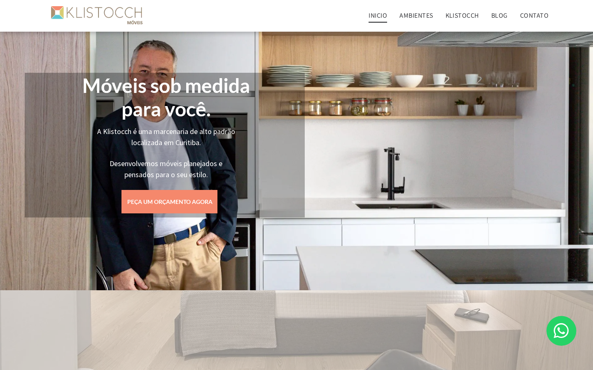
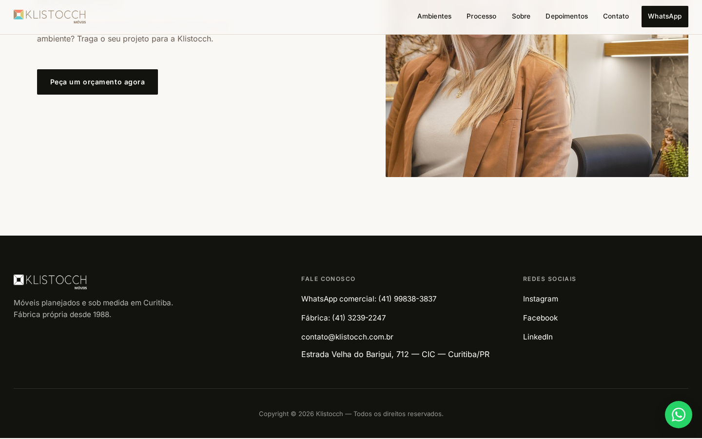

A Klistocch tem fábrica própria, tradição desde 1988 e bons depoimentos, mas o site atual deixa dinheiro sobre a mesa: lacunas visuais, conteúdo de template esquecido e hierarquia semântica fraca interrompem a vitrine do portfólio. Esta proposta apresenta uma direção de site íntegra, visual e focada em orçamentos qualificados.
O que muda com essa direção
Site atual (diagnóstico)

Blocos vazios, texto de template (“Título do Slide / Escreva sua legenda aqui”), múltiplos H1, rodapé com copyright 2020 e aspas solta no final da página.
Proposta (preview)

Homepage 100% visual, sem lacunas, organizada por ambiente, com processo, prova social e CTA claros em cada cômodo.
Problemas priorizados e melhorias correspondentes
Entregáveis
- Homepage estática responsiva (HTML + CSS + JS) pronta para publicação em qualquer hospedagem estática.
- Direção visual baseada na identidade real da Klistocch: paleta, tipografia, logo e fotografias oficiais.
- Schema.org, metatags, alt text, navegação acessível e menu mobile com comportamento teclado/Esc.
- Links de WhatsApp rastreáveis por ambiente e CTA principal para orçamento.
- Esta página de proposta, separada, sem link no site de produção.
Dependências e premissas
- Aprovação da direção visual e das fotografias selecionadas da fonte oficial.
- Fornecimento das credenciais do WhatsApp Business e da plataforma de destino (Wix, WordPress, hospedagem estática, etc.).
- Confirmação dos contatos e endereço para evitar divergências na publicação final.
- Para funcionalidade de formulário real, é necessário backend ou serviço de formulário (Typeform, Tally, etc.).
Sequência e cronograma sugerido
- Semana 1Aprovação da direção, seleção final de imagens e copy de ambientes.
- Semana 2Build da homepage, otimização de imagens, SEO técnico e testes responsivos.
- Semana 3Integração de formulário / WhatsApp, ajustes finais e publicação.
- Pós-liveAcompanhamento de conversões, ajustes de CTA e possíveis páginas internas de ambientes.
Divulgação independente: Esta proposta é um conceito preparado por Kimi Code / Direção Digital e não foi solicitado, revisado nem aprovado pela Klistocch Móveis. Não afirmamos relação comercial, parceria ou autoridade para falar em nome da empresa. Todos os dados de contato, endereço, marcas e depoimentos foram extraídos de fontes públicas oficiais (klistocch.com.br e redes sociais públicas). Nenhum projeto, prêmio, garantia ou métrica foi inventado.
Artefatos produzidos: index.html, styles.css, script.js, assets/, SOURCE_MANIFEST.md e BUILD_REPORT.md. O conceito pode ser exibido em uma prévia técnica, mas não foi adotado nem publicado no domínio oficial da Klistocch.